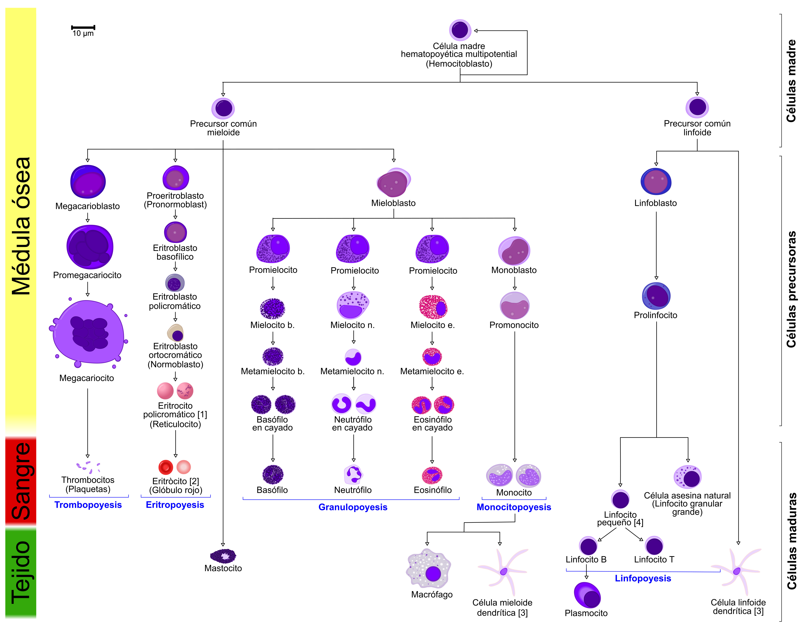

La Célula
La célula es la unidad más pequeña de la vida, ya que realiza las tres funciones vitales: nutrición, relación y reproducción.
Dato curioso
Nuestro cuerpo alberga aproximadamente 100 billones de células y más de 250 tipos diferentes.
 Principales orgánulos celulares.
Principales orgánulos celulares.
Catabolismo y anabolismo
Estos términos pertenecen a la función de nutrición de la célula, e indican la finalidad y el tipo de reacción que se produce en el metabolismo celular: el conjunto de procesos químicos que experimentan los nutrientes dentro de la célula.
- Catabolismo. Transformación de sustancias orgánicas complejas, ricas en energía, en compuestos más pequeños y simples. En el catabolismo se obtiene energía, que es utilizada por la célula para sintetizar nuevas moléculas, para la reproducción o para el propio funcionamiento celular.
- Anabolismo. Reacciones de tipo constructivo. Comprende los procesos que convierten las sustancias pequeñas y sencillas en sustancias orgánicas complejas propias de la célula, que utiliza para crecer y para reponer estructuras dañadas o perdidas. Para llevar a cabo estos procesos es necesario utilizar energía.
Célula procariota
Son las células más simples, de organismos unicelulares, como por ejemplo las bacterias, que pertenecen al reino Moneras. Las principales características de las células procariotas son:
- Carecen de núcleo, su material genético está disperso en el interior del citoplasma.
- Tienen ribosomas, pero no poseen ningún otro orgánulo.
- La membrana plasmática está cubierta por una pared celular.
Estas células se componen de:
- Membrana plasmática. Fina capa que envuelve a la célula y delimita el citoplasma. A través de ella se produce el intercambio de sustancias.

- Pared bacteriana. Envoltura rígida y gruesa, formada por polisacáridos, que se sitúa por encima de la membrana. Protege y da forma a la bacteria.
- Cápsula bacteriana. Cubierta externa gruesa que no presentan todas las bacterias. Sirve para adherirse y protegerse.
- Cromosoma bacteriano. El material genético es una molécula circular de ADN dispuesta en una región llamada nucleoide.
- Ribosomas. Partículas que realizan la síntesis de proteínas.
- Apéndices. Pueden ser estructuras como los flagelos, que intervienen en el movimiento, y las fimbrias, más cortas y numerosas, que ayudan a la bacteria a fijarse a un sustrato.
Célula eucariota
Son más complejas que las procariotas, y generalmente más grandes. Es el tipo de célula que tienen los seres humanos. En ella se distinguen tres estructuras:
- Membrana plasmática. Es la estructura que delimita la célula y permite el intercambio de sustancias con el exterior. Está formada por una doble capa de fosfolípidos (1) en la que se intercalan moléculas de colesterol y diferentes tipos de proteínas. Este modelo de membrana se denomina de mosaico fluido porque los elementos que la constituyen se mueven y cambian de posición.
- Citoplasma. Es el espacio de la célula comprendido entre la membrana y el núcleo. En él se encuentra:
- Citosol. Es el medio fluido interno.
- Orgánulos. Estructuras que cumplen distintas funciones.
- Citoesqueleto. Formado por fibras proteicas que intervienen en el movimiento, la organización interna y la división celular.
-
- Centrosoma. Está constituido por dos cilindros formados por microtúbulos proteicos llamados centriolos (solo presentes en la célula animal). Ambos se disponen de forma perpendicular y están rodeados de otros microtúbulos que forman el áster. Participan en la organización de las fibras del citoesqueleto, la motilidad (3) celular y la formación del huso mitótico (4) cuando la célula se va a dividir.
- Núcleo. Es una estructura esférica en cuyo interior se encuentra el material genético que controla el funcionamiento celular. Está rodea da de una doble membrana, denominada envoltura nuclear, que tiene multitud de poros que permiten el intercambio de sustancias con el resto de la célula. En el núcleo se encuentran:
- Nucleoplasma. Estructura que se observa como una masa esférica y densa formada por ARN y proteínas. Solo es visible cuando la célula no se está dividiendo. En una célula puede haber uno o varios nucleolos.
- Nucleolo. Medio fluido del interior del núcleo.
- Cromatina. Conjunto de fibras de ADN unidas a proteínas que constituyen el material genético de la célula. Al condensarse en la división celular forman los cromosomas(2).
- Tipo especial de lípidos que están formados por una cabeza hidrofílica y unas colas hidrofóbicas. Al agruparse en las membranas, las cabezas se orientan hacia los exteriores (dentro y fuera de la célula) y las colas hacia el interior, formando una bicapa lipídica.
- Los cromosomas humanos están organizados en 23 pares, sumando un total de 46 cromosomas en la mayoría de nuestras células.
- La habilidad de moverse espontánea e independientemente.
- Es el conjunto de microtúbulos que brotan de los centrosomas durante los procesos de división celular, sea mitosis (huso mitótico) o meiosis (huso acromático o meiótico).
Orgánulos
- Mitocondrias. Es un orgánulo ovalado con una doble membrana. La externa es lisa y la interna está replegada hacia el interior formando las crestas mitocondriales. En ella, mediante el proceso de respiración celular, se obtiene la mayor parte de la energía de la célula.
- Retículo endoplasmático o R. E. Es un conjunto de sáculos y canales membranosos interconectados entre sí. Puede ser de dos tipos:
- R. E. Rugoso. Está conectado con la envoltura nuclear y lleva asociados ribosomas. Participa en la síntesis y el transporte de proteínas hacia el aparato de Golgi.
- R. E. Liso. No lleva ribosomas asociados y en él se produce la síntesis de los lípidos.
- Aparato de Golgi. Es un conjunto de sacos membranosos aplanados y apilados conectados entre sí. En ellos se almacenan y procesan sustancias transferidas desde el retículo endoplasmático. Del aparato de Golgi se emiten vesículas de secreción que contienen productos que se vierten al exterior.
- Vesículas. Son sacos membranosos de pequeño tamaño que almacenan, transportan o digieren distintas sustancias celulares, como agua, sustancias de reserva o pigmentos.
- Lisosomas. Son vesículas membranosas redondeadas, procedentes del aparato de Golgi, que contienen enzimas hidrolíticas que participan en la digestión intracelular de sustancias, es decir, que transforman sustancias más complejas en otras más sencillas mediante hidrólisis.
- Ribosomas. Son partículas pequeñas no membranosas formadas por ARN y proteínas. Pueden estar libres en el citoplasma o adheridos al R. E. rugoso. Realizan la síntesis de proteínas.
- Cilios y flagelos. Son prolongaciones citoplasmáticas que intervienen en el movimiento celular. Tienen una estructura interna similar, pero los cilios son cortos y abundantes, y los flagelos son largos y una célula suele presentar uno o dos.
- Citoesqueleto. Está formado por un conjunto de filamentos proteicos de distinto tipo. Su función es mantener la forma celular, facilitar el movimiento de la célula, de los orgánulos y de las vesículas internas. También participa en la organización de los cromosomas durante la división celular.
Células especializadas
Células sanguíneas
-
Glóbulos rojos o eritrocitos o hematíes. Células más abundantes en la sangre. Son pequeñas y sun función es transportar oxígeno y dióxido de carbono.
-
Glóbulos blancos o leucocitos. Son menos numerosos que los eritrocitos. Su función es defender el organismo ante las infecciones.
- Plaquetas o trombocitos. Son trozos de unas células más grandes (los megacariocitos). Ayudan a formar un coágulo para taponar las heridas y evitar que se escape la sangre.
Dato curioso
Los eritrocitos son 1000 veces más frecuentes en la sangre que los leucocitos.
Hematopoyesis
Es el proceso de formación, desarrollo y maduración de los elementos de la sangre (eritrocitos, leucocitos y trombocitos) a partir de un precursor celular común e indiferenciado conocido como célula madre hematopoyética multipotente.

Células del sistema nervioso
- Neuronas. Están especializadas en recibir y transmitir información mediante impulsos nerviosos. Tienen un cuerpo celular en el que se encuentra el núcleo, y dos tipos de prolongaciones:
- Dendritas. Prolongaciones muy ramificadas. Reciben y transmiten los impulsos al cuerpo celular.
- Axón. Prolongación larga y delgada que sale del cuerpo celular y se ramifica en su extremo. Envía impulsos desde el cuerpo celular hasta otras neuronas o algún órgano. Las neuronas no se tocan entre sí, sino que existe un espacio entre ellas: la sinapsis. A través de este espacio se transmite el impulso nervioso mediante unas sustancias químicas llamadas neurotransmisores.
- Células de glía. Se encuentran entre las neuronas. Hay diferentes tipos, con diferentes funciones, como aportar nutrientes o protección a las neuronas, o retirada de deshechos.
Células reproductoras o gametos
| Óvulo | Espermatozoide |
|---|---|
| Es una célula muy grande con forma esférica. Se producen en los ovarios, dentro de unas cápsulas llamadas folículos de Graaf. Cada 28 días, aproximadamente, uno de estos folículos madura, se abre y expulsa un óvulo, que pasa a las trompas de Falopio y se dirige hacia el útero. | Es una célula pequeña con una larga cola que le permite desplazarse y una cabeza que contiene el núcleo. Se producen continuamente desde la pubertad. Los espermatozoides salen del cuerpo a través de la uretra en un proceso denominado eyaculación. Con la eyaculación se expulsa al exterior el semen, que contiene los espermatozoides y los líquidos segregados por las vesículas seminales y la próstata. |
 |